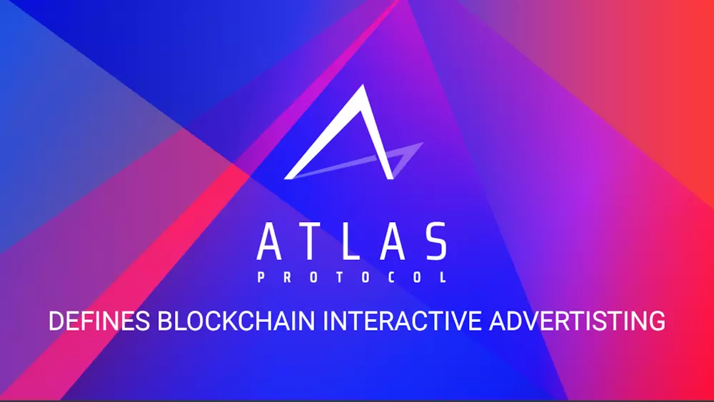

8月21日，星途协议Atlas Protocol（ATP）商业公司宣布获得数千万元种子轮投资，由软银中国资本（SBCVC）领投，BV（百度风投）、丹华资本（DHVC）、Fenbushi Digital跟投。投资方均看好星途协议ATP未来在区块链互动广告营销领域带来的颠覆式创新。

星途协议ATP由星云实验室（Nebulas Labs）联合xGoogler区块链联盟（xGBA）重点孵化，致力于打造区块链原生的互动广告基础设施，构建区块链营销新范式。星途协议创造性地提出了一种区块链世界的全新媒体形式，定义了连接广告主、流量方、用户之间的链上交互标准，对链上行为进行目标价值排序，并用通证实现价值流转。
星途协议ATP联合创始人刘杜然表示：“区块链是价值网络，星云指数（Nebulas Rank）提供了一个区块链多维数据价值的衡量标准。星途协议核心算法基于扩展的星云指数，旨在为区块链生态创造值得信赖的新型营销渠道。” 星途协议ATP提供的星途智能空投（ATP Smartdrop）服务已应用于星云链（Nebulas）激励计划，将通证奖励精准投放到逾十万用户手中。据悉，星途智能空投是星途协议ATP打造的第一款服务应用，着力于通过区块链用户的链上交互行为实现智能营销互动。
正如丹华资本创始董事长、斯坦福大学张首晟教授所说，区块链生态长期良性发展需要有优秀的团队，为行业真正赋能。星途协议ATP项目创始团队有丰富的区块链及互联网广告行业经验，创始团队成员前星云实验室负责人刘杜然、前FreeWheel工程总监李成、星云链创始人徐义吉、Linked-Media创始人王婷婷都曾在互联网广告巨头Google工作多年。另外，技德科技联合创始人、Google广告系统首位工程师周哲，CertiK联合创始人、哥伦比亚大学顾荣辉教授将担任技术顾问。本轮融资后，星途协议ATP将继续扩张团队、优化协议和产品、开拓市场和渠道。
本轮领投的软银中国资本成立于2000年，是领先的风险投资和私募股权基金管理公司，曾成功投资了阿里巴巴、淘宝网、分众传媒等优秀企业。软银中国合伙人周晔博士相信区块链互动广告营销领域有潜力催生下一个行业巨头，期待星途协议能成为区块链世界的Google Ads。
此外，BV百度风投、丹华资本及Fenbushi Digital共同参与了此次种子轮投资，认可星途协议ATP的技术实力，期望团队可通过区块链技术来提升互动广告营销效率，打造区块链时代的广告联盟，消除行业的信息不对称，为区块链世界带来更有效的流量和用户。
了解关于星途协议的更多信息，请访问：https://atlasp.io/